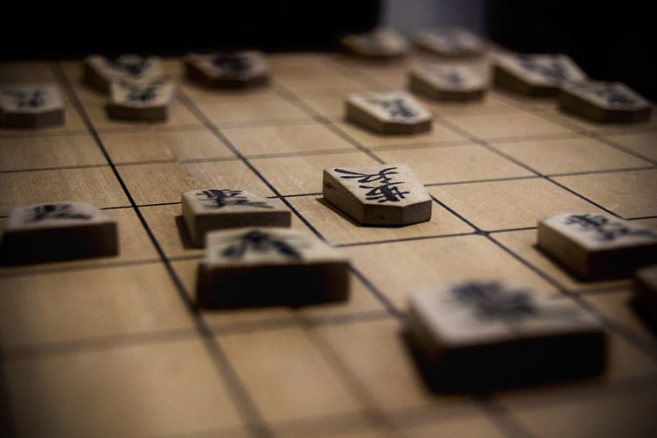

Shogi - Japanese chess
Shogi or Japanese chess is a traditional logical and strategy chess-like game from Japan. Even non-chess players find out that Japanese chess is fun and many people who don't like chess, love to play shogi!
Shogi is very famous in its native homeland of Japan, where it has a very rich tradition and history.
The biggest difference from classic chess is that all captured opponent's pieces can be returned back to the game as your own on any empty square. Another difference is that most of the pieces can be upgraded when they reach the promotion zone (the last 3 rows). In Shogi there are almost no tie games.